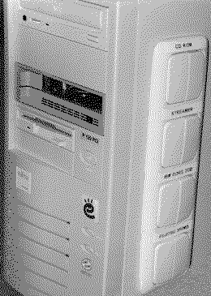

Previous
Next
TOC
SCSI ID Schalter aussen am Gehäuse montiert
Normal ist der SCSI Bus ja gar kein Problem, es können maximal acht
Geräte angeschlossen werden mit den Gerätenummern 0 bis 7. Aber wehe
es kommt ein Bekannter vorbei und bringt bspw. ein SCSI-Gerät zum
Datenaustausch mit, schon ist das Gefluche groß, der Blick zur Tas-
chenlampe finster, der passende Schraubendreher für die Gehäuse-
schrauben liegt mit Sicherheit im Auto (welches die Frau hat zum
Einkaufen) und die Jumper liegen garantiert nicht in der Schublade,
wo sie sein sollten.
Nun, es geht auch einfacher, man nehme je nach Anzahl der eigenen
SCSI Geräte ein paar Lichtschalter (Wechselschalter oder dreifache
Ausschalter für Unterputzmontage inklusive eines passenden Abdeck-
rahmens samt der erforderlichen Anzahl von Hohlwandeinbaudosen (gibt
es in jedem Baumarkt) und eine Lochfräse samt großzügig dimensio-
nierter Bohrmaschine um die Lochausschnitte in das Blechkleid des
Computergehäuses reinzubekommen.
Ein Montagebeispiel zur Ansicht (Abbildung 1)

Um die Löcher geometrisch exakt auf eine Gerade zu bekommen, sollte
man sich schon eines Winkels und eines weichen Bleistiftes bedienen,
welcher wiederum in Verbindung mit einem Gliedermaßstab (ob aus Holz
oder PVC ist schnurz) zur Anwendung kommt. Um unnnötige Abrutscher
und Beschädigungen der Lackierung zu vermeiden sollte man die vorher
angezeichneten Bohrlöcher ankörnen, aber bitte nicht das Blech ver-
biegen oder gar einen Durchschlag verwenden (Hohlnieten brauchen wir
für die SCSI IDs nicht). Nachdem nun die Löcher drinnen sind, o weh
die falsche Seite erwischt, na macht nichts stellen wir halt den
Schreibtisch um oder greifen zur Dose mit Bauschaum um die entstan-
denen Hohlräume wieder zu versiegeln.
weiterblättern
Kapitel SCSI ID Schalter aussen am Gehäuse montiert, Seite 1